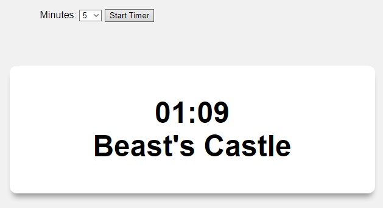
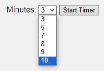

KH2 Countdown Timer
Timer that selects a random world from KH2.
https://cj-2123.github.io/KH2-Countdown-TimerFeatures
The user can pick from various time options to set the countdown.
The html is easy to edit to add more custom time options.
The javascript file is also easy to edit to customize the list of worlds or change the entire list to something else.
Future Work
- Completely custom time form
- Let user edit list (maybe upload a file?)
Demo
Here's a video of the timer in use: